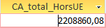

Conception - Interrogation d'une base de données
Requête 2 CA total généré, à ce jour, avec les fournisseurs de l'UE.
Réflexion sur l'origine des produits
Étapes de la requête
Première étape : FROM
Je commence par sélection les tables qui contiennent des informations qui vont me servir (soit dans ma sélection, soit dans mon affichage). J'écris SELECT mais je le garde pour plus tard.
J'ai besoin de DetailCommande pour les quatités et les remises dans mon calcul du CA, de Produit pour le coût d'achat, de Categorie pour le CoefMarge, et de Fournisseur et Pays pour sélectionner seulement les fournisseurs UE.
Ma jointure est en INNER JOIN car j'ai besoin de l'intersection de ces tables.
Deuxième étape : WHERE
Je viens ici seulement prendre les fournisseurs des pays membres de l'UE grâce à la table Pays qui est reliée à la table Fournisseurs.
Troisième étape : SELECT
Enfin j'affiche mon CA par unité (coût achat x coût marge) que je multiplie ensuite par les quantités vendues par fournisseur pour obtenir le CA par fournisseur, puis j'ajoute toutes ces valeurs entre elles pour le CA total (en prenant en compte seulement les fournisseurs UE).
Pour terminer, j'arrondis sinon il y a trop de chiffres non pertinents derrière la virgule.
Dernière étape : ORDER BY
Pas besoin d'ORDER BY car le résultat qu'on obtient n'est qu'une seule cellule (deux si on compte l'étiquette de la colonne).
Ce que ça donne en SQL
SELECT
ROUND(SUM(P.CoutAchat *
C.CoefMarge *
D.Quantité *
(1 - D.[Remise (%)]))
,2) AS CATotalUE
FROM
(((DetailCommande AS D
INNER JOIN Produit AS P ON D.[Réf produit] = P.RefProd)
INNER JOIN Categorie AS C ON P.CodeCateg = C.CodeCateg)
INNER JOIN Fournisseur AS F ON P.NoFour = F.NoFour)
INNER JOIN Pays AS Y ON F.NoPays = Y.NoPays
WHERE
Y.UE = 'Membre';
ORDER BY
Résultats et interprétation

Vous pouvez trouver ici la cellule résultat de la reqête.
Le résultat obtenu est de 2 754 529,74 €
En d'autres mots : à ce jour, les fournisseurs européens ont permis de générer plus de 2,7 millions d'euros.
Ce montant représente une part importante de l'activité commerciale de KDou. Il montre que les fournisseurs européens occupent une place majeure dans son activité et que l'entreprise ne dépend pas uniquement de fournisseurs internationaux pour générer son chiffre d'affaires.
Cet indicateur permet également d'avoir une première vision de l'origine économique des produits vendus par KDou. Il pourra notamment être comparé au chiffre d'affaires généré avec les fournisseurs hors UE afin de mieux comprendre la place qu'occupent ces derniers dans l'activité de l'entreprise.
Proposition d'indicateur pertinent Chiffre d'affaire dégagé avec les fournisseurs hors UE.
Réflexion sur l'origine des produits
Dans sa forme actuelle, KDou travaille avec des fournisseurs du monde entier pour leurs produits.
Seulement voilà, KDou veut garder voire coonsolider son image éco-friendly, et ça peut sembler un petit peu contradictoire lorsqu'on pense que les produits japonais ou singapouriens doivent être acheminés jusqu'en France.
L'idée que j'ai eue c'est de quatifier à quel point le CA de KDou repose sur ces fournisseurs-là.
Objectif prendre conscience à KDou de la taille de la part non-eco-friendly de son CA.
J'apporterai d'autres justifications et idées plus bas.
Étapes de la requête
Première étape : FROM
Comme pour la requête 2, je commence par sélection les tables qui contiennent des informations qui vont me servir.
J'ai besoin de DetailCommande pour les quatités et les remises dans mon calcul du CA, de Produit pour le coût d'achat, de Categorie pour le CoefMarge, et de Fournisseur et Pays.
Ma jointure est en INNER JOIN car j'ai besoin de l'intersection de ces tables.
Deuxième étape : WHERE
Je viens ici seulement prendre les fournisseurs des pays non-membres de l'UE.
Troisième étape : SELECT
Enfin j'affiche mon CA par unité que je multiplie ensuite par les quantités vendues par fournisseur pour obtenir le CA par fournisseur, puis j'ajoute toutes ces valeurs entre elles pour le CA total hors-UE.
Pour terminer, j'arrondis sinon il y a trop de chiffres non pertinents derrière la virgule.
Dernière étape : ORDER BY
Pas besoin d'ORDER BY car le résultat qu'on obtient n'est qu'une seule cellule (deux si on compte l'étiquette de la colonne).
Ce que ça donne en SQL
SELECT
ROUND(SUM(P.CoutAchat *
C.CoefMarge *
D.Quantité *
(1 - D.[Remise (%)]))
,2) AS CATotalUE
FROM
(((DetailCommande AS D
INNER JOIN Produit AS P ON D.[Réf produit] = P.RefProd)
INNER JOIN Categorie AS C ON P.CodeCateg = C.CodeCateg)
INNER JOIN Fournisseur AS F ON P.NoFour = F.NoFour)
INNER JOIN Pays AS Y ON F.NoPays = Y.NoPays
WHERE
Y.UE = 'Hors';
ORDER BY
Résultats et interprétation

Vous pouvez trouver ici la cellule résultat de la reqête.
Le résultat obtenu est de 2 208 860,08 €
En d'autres mots : à ce jour, les fournisseurs non-européens ont permis de générer plus de 2,2 millions d'euros.
Ça peut sembler superflu mais maintenant, on peut comparer ce CA avec celui des fournisseurs européens. KDou génerer plus d'argent avec ces derniers qu'avec les founisseurs internationaux. C'est quelque chose de très positif pour l'image éco-friendly de KDou car un peu plus de la moitié de son CA est local, dans une certaine mesure (à l'échelle européenne).
Cet indicateur n'est pas seulement là pour donner cette information liée au CA mais peut aussi servir à quantifier la proportion de dépendance à l'international et à la mondialosation, aux crises géopolitiques comme les guerres qui augmentent les coûts à tous niveaux, et encore plus lorsuque ces crises sont lointaines. Même si un peu plus de la moitié du CA est local, l'autre grosse moitié ne l'est pas, avec des produits venant parfois de Singapour ou du Japon
Cet indicateur peut donc amener KDou à se poser des questions sur ses prochaines décisions liées à son développement :
Faut-il continuer à s'étendre grâce aux avantages des fournissuers internationaux comme leurs bas coûts ou alors favoriser des produits similaires ou identiques, plus proches, car ils sont plus respectueux de l'environnement et aussi souvent mieux réglementés sur le sol européen, même si ça implique un plus haut coût ?
Cela n'est pas seulement une question que KDou pourrait se poser. Les clients peuvent eux aussi se poser des questions sur la pollution qu'ils engendrent et sur leur dépendance aux politiques internationales. Peut-être que certains, beaucoup, la majorité ou presque tous seraient prêts à payer plus pour éviter ces soucis ! Mais ça reste à vérifier.
La question aujourd'hui, c'est : jusqu'où KDou et ses clients sont prêts à aller en terme d'écologie ?